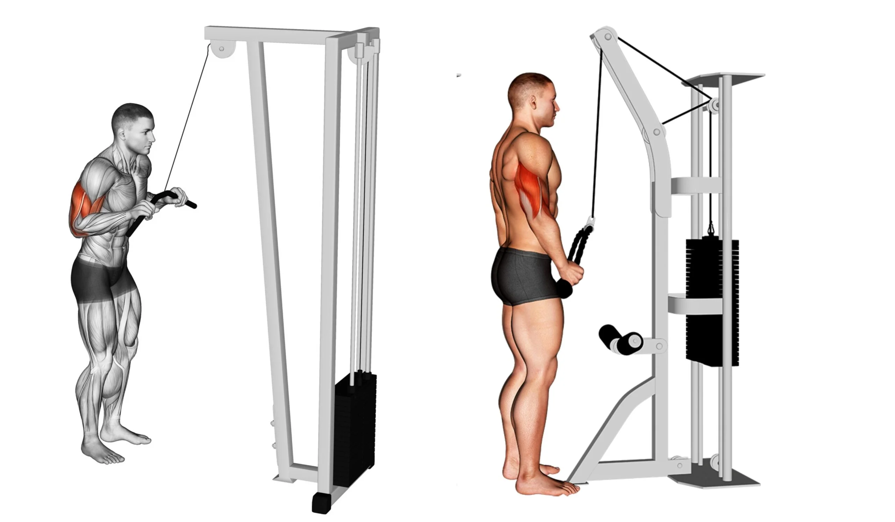
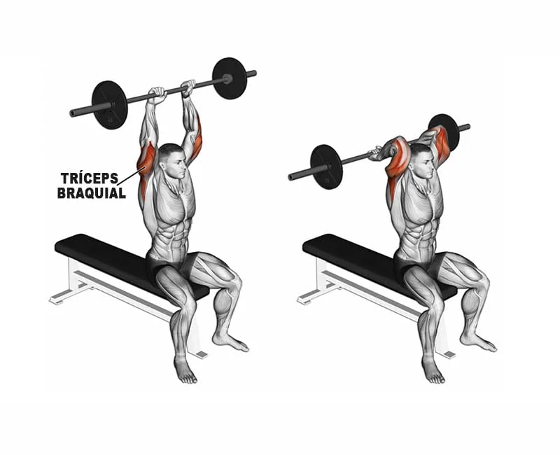
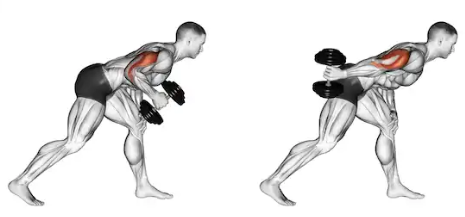
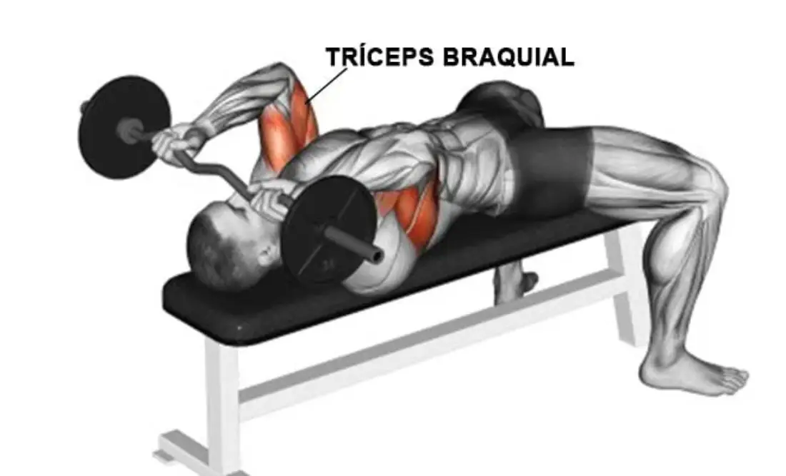

Exercícios para tríceps:
Tríceps Pulley
Ajuste a polia na parte mais alta do aparelho. Fique em pé de frente para a barra, com os pés paralelos ou com um deles posicionado um pouco à frente do outro. Mantenha a cabeça alinhada com a coluna e olhe para a frente. Mantenha o abdome contraído e faça força com os tríceps para empurrar a barra devagar para baixo até esticar os braços. Em um movimento contínuo e concentrado, volte a flexionar os cotovelos, sustentando a carga em todo o trajeto.
Tríceps Francês
Sentado, segurar a barra acima da cabeça com os braços estendidos. O punho deve estar firme e neutro durante todo o exercício. Flexione os braços até a barra estar atrás da cabeça. Estenda ao máximo os cotovelos, até o limite de contração do tríceps. Durante todo o movimento mantenha os cotovelos o mais próximo possível da linha dos ombros, o tronco deve estar ereto durante o exercício.
Tríceps Coice
Para iniciar o exercício é necessário estar com um halter em uma das mãos, depois é necessário curvar o tronco a frente e o braço apoiado a lateral do tronco e paralelo ao solo. O movimento se inicia com o braço flexionado e de maneira controlada estender o cotovelo até contrair ao máximo o tríceps e depois retornar lentamente à posição inicial.
Tríceps Testa
Mantenha os cotovelos flexionados em 90 graus entre o braço e o antebraço. Puxe a barra para a frente até realizar a extensão dos cotovelos. Não altere a posição inicial dos braços e dos ombros durante o movimento. Repita voltando devagar, sempre estendendo o cotovelo até contrair ao máximo o músculo tríceps.